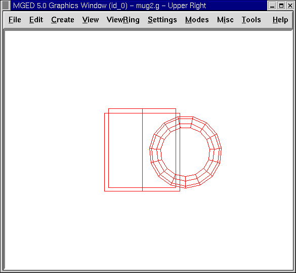
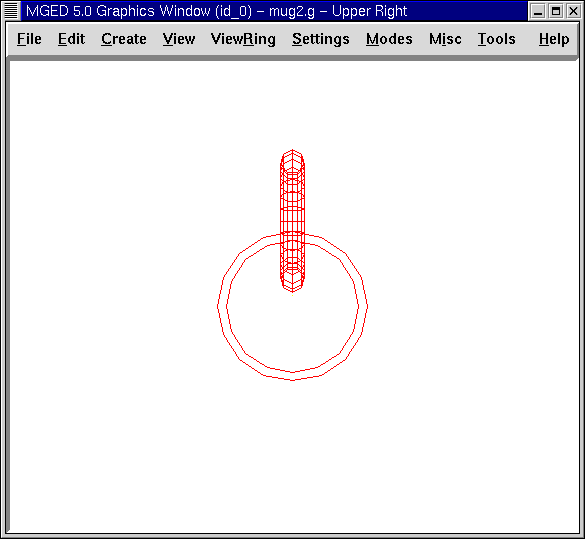

12. Creating the Mug Through the GUI
In this lesson, you will:
-
Create the shapes of the mug through the GUI.
-
Use new shapes to create the handle and rim of the mug.
-
Combine the shapes.
-
Make a region of the combinations.
-
Check the data tree and make corrections.
-
Assign material properties using the Combination Editor.
In the previous two lessons, you created a mug by entering commands at the Command Window prompt. Now, you will create the same type of mug using the GUI and different shapes.
Begin by opening a new database. Call it mug2.g.
1. Creating the Body of the Mug
Go to the Create menu and select rcc (right circular cylinder) under the Cones and Cylinders category. Enter the name for the rcc. Call it outside.s.
Go to the Edit menu, where you will be offered the following options:
Set H Set H (Move V) Set A Set B Set c Set d Set A,B Set C,D Set A,B,C,D Rotate H Rotate AxB Move End H(rt) Move End H |
Rotate Translate Scale None of the Above |
Reject Accept Apply Reset |
Primitive Editor Combination Editor |
|
The first column includes shape-specific functions. The other columns are functions common to all shapes. |
Select Set H. From a Front view, move your mouse cursor to the lower half of the screen and click the middle mouse button to reduce the scale of the cylinder’s height. Next select Set A,B,C,D. Move your mouse cursor to the upper half of the screen and click the middle mouse button to increase the diameter of the cylinder. Accept your changes when your object appears similar to the one shown in the following figure.
|
If at any time when you are editing through the GUI you don’t like your changes, you can click on Reject to refuse the changes or Reset to return the shape to its original form. However, if you select Reject, you will have to re-enter the Primitive Edit state, as described in previous lessons. |
Next, create an inside right circular cylinder and name it inside.s. Edit the cylinder the same way you edited the outside cylinder. Before you accept your changes, change View to Top and make sure your cylinders are in alignment. If the cylinders are out of alignment, use the SHIFT key and left mouse button to drag the inside cylinder into position. Return your View to Front and Accept your changes when the cylinders are lined up. Your cylinders should look like those in the following example:
|
Remember that when you scale a shape, the position of the mouse pointer in the Graphics Window will determine how large or small the change will be. The closer the mouse pointer is to the center horizontal line of the window, the smaller the change will be, and vice versa. |
2. Creating the Handle of the Mug
Previously, we made the handle of the mug using an elliptical torus. In this lesson, we make the handle by selecting a torus (which is a doughnut shape) from the menu of shapes. Name the torus handle.s. The Edit menu will now offer a different set of parameters than those of the right circular cylinders, as shown in the following list:
Set Radius 1 Set Radius 2 |
Rotate Translate Scale None of the Above |
Reject Accept Apply Reset |
Primitive Editor Combination Editor |
In this instance, Set Radius 1 changes the distance from the center of the doughnut hole to the middle of the dough. Set Radius 2 changes the radius of the dough ring. With the same technique used in editing the rcc shapes, edit the size of the torus until it looks similar to the following examples:

Figure 2. Mug and Handle from a Front View
|

Figure 3. Mug and Handle from a Top View
|
Check your mug from the top to make sure the handle is aligned. Accept your changes when you are finished.
3. Creating the Rim of the Mug
To make the rim of the mug, go to the Create, select tor, and name it rim.s. Select the Rotate command and type on the Command Line:
p 0 90 0 Enter
to rotate the torus on its side (90'0 about the y axis). Then, Scale and edit the various parameters of the torus using the front and top views until the mug looks similar to the following example. Make sure you Accept your changes when you are finished.

4. Creating Combinations of the Various Shapes
To combine the various shapes of the mug, type the following commands at the Command Window prompt:
comb mug.c u outside.s - inside.s Enter
comb handle.c u handle.s - outside.s Enter
comb mug.c u rim.s Enter
| Refer to the previous two lessons to recall how each of these commands works. |
5. Making a Region of the Combinations
To make a region out of the combinations you just created, type at the Command Window prompt:
r mug.r u mug.c u handle.c Enter
6. Checking the Data Tree
Before continuing, it would be wise to check your data tree and make sure it agrees with the following tree:
mug.r/R u mug.c/ u outside.s - inside.s u rim.s u handle.c/ u handle.s - outside.s
If your data tree doesn’t look like this example, you will need to go back and figure out where you went wrong. If necessary, you can kill off a shape, combination, or region by typing at the Command Window prompt:
kill [name of shape, combination, or region] Enter
For example, in this lesson you may have created an extra shape, named rim2.s, which you no longer want. To kill this shape, you would type:
kill rim2.s Enter
7. Assigning Material Properties Using the Combination Editor
Go to the Edit menu and select Combination Editor. Type mug.r in the Name entry box. Press ENTER. Type 0 148 0 in the Color entry box. Select a plastic shader. Check the Boolean Expression box to make sure it says:
u mug.c u handle.c
When you are finished, click on Apply and then Dismiss. In the Command Window then, type at the prompt:
B mug.r Enter
8. Raytracing the Design
Go to the View option of the menu bar and select az35, el25. Go to File and then Raytrace. Select a white background color and Raytrace your design. Click on Overlay. When the raytracing is finished, it should look like the following example: